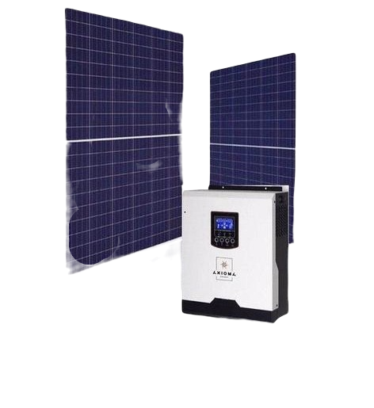

Інтернет-магазин виделка
Знайдіть своє рішення
Знайдіть своє рішення
- Оберіть місце розміщення батарей
- Визначіть оптимальний кут нахилу
- Замовте необхідні матеріали на нашому сайті
- Встановіть панелі
- ПРОФІТ

Комплект автономної сонячної автономної електростанції потужністю 5
кВт ідеально підходить для забезпечення чистою електроенергією
приватного будинку, котеджу або дачі.